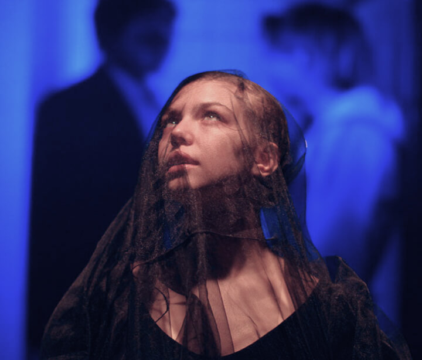

С_училища
Пьеса о демоническом обаянии студентки ПТУ и ее роковой роли в жизни преподавателя философии.
Семён Серзин сделал читку этой пьесы в рамках основной программы Любимовки-2017, Варочный Цех предоставил грант на постановку, а Московский драматический театр имени А.С. Пушкина принял спектакль в репертуар.
1 ч. 15 мин.
18+
Пьеса «Длань Господня» (Hand to God) — лауреат американской театральной премии OBIE (Off-Broadway Theater Awards), номинант ежегодно присуждаемой премии TONY (Theatre Of New York), театрального аналога «Оскара», и номинант на Британскую премию Лоуренса Оливье в качестве «Лучшей Новой Комедии». Она была поставлена в бродвейских театрах и в лондонском Вест-Энде.
Этот спектакль – результат коллаборации фестиваля драматургии «Любимовка», который запустил проект по выпуску собственных спектаклей «Любимовка.Продакшн», Театра 18+ и Театра.doc. Исполнители – выпускники актерской лаборатории Юрия Муравицкого Московской Школы Нового Кино.
Режиссёр спектакля Юрий Муравицкий – лауреат Национальной театральной премии «Золотая маска», лауреат премий Herald Angel Award и Total Theatre Award в номинации Innovation, Experimentation & Playing with Form на Edinburgh Festival Fringe: «В этой пьесе меня задевает её смелость и свобода. И то, что она написана смешно. Мне сейчас интересны комедии. В январе я выпустил «Lё Тартюф. Комедия» в театре на Таганке — тоже комедию и тоже в известном смысле антиклерикальную. У меня есть стойкое ощущение что всему, что сейчас происходит в нашей стране и в мире, мы можем противопоставить только смех. Иногда горький смех, иногда злой. Сейчас в воздухе столько ненависти, что нам всем полезно больше смеяться. И над собой в том числе. «Длань Господня» — это чёрная комедия. Помимо прочего, она показывает к чему приводит навязывание и насильственное насаждение религии».
Пьеса была успешно представлена в России в формате читки в 2016 году рамках лаборатории LARK+Любимовка на сцене Центра им. Мейерхольда.
Почитать пьесу
Андрей Иванов
Иванов
Санкт-Петербург 2020